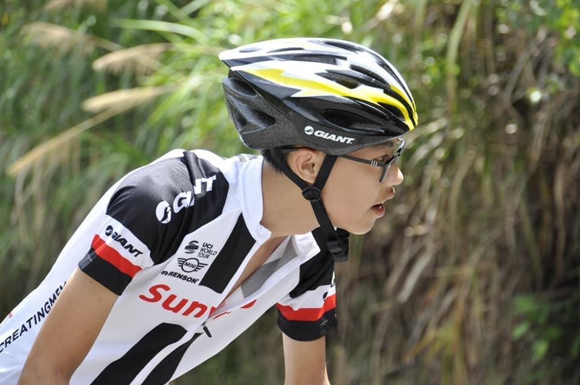
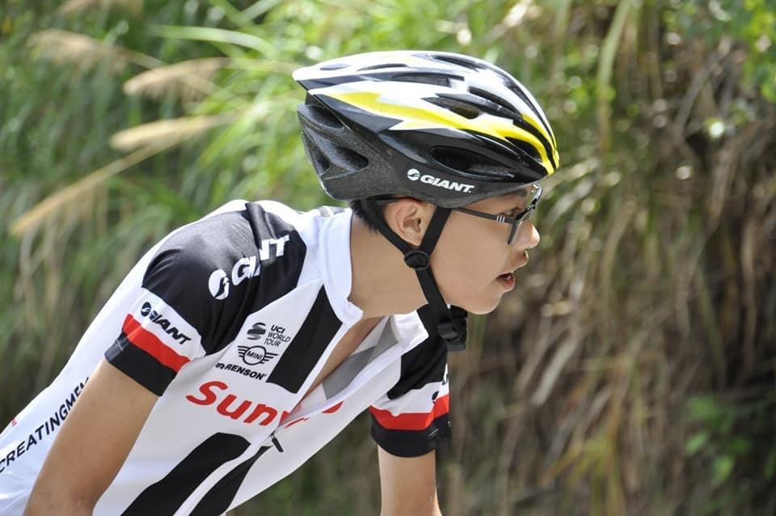
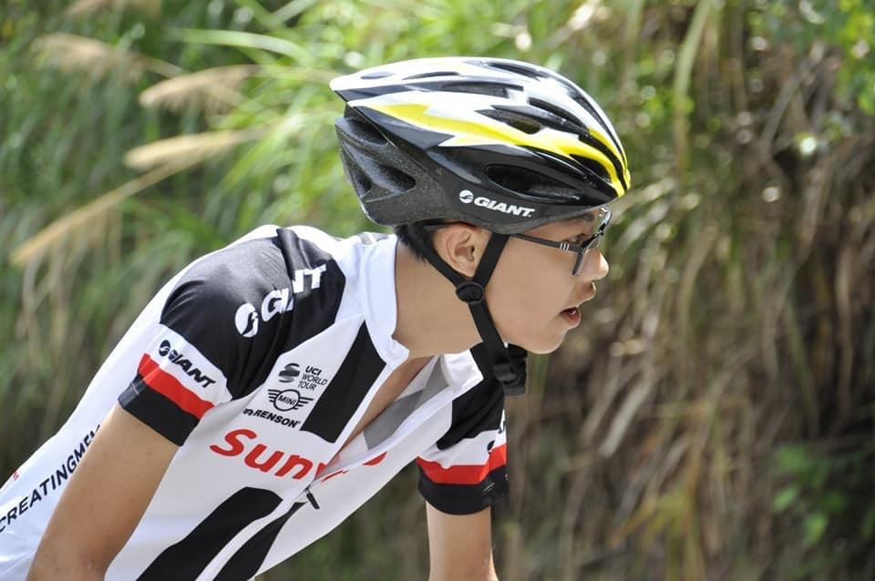

在黃海中廷下來，只為給你留下officer企劃媒合平台
Home
在黃海中廷下來，只為給你留下officer
隊名由來:在我們第一天相認時就看到有一個隊友頭貼是Word的圖片，然後他就拿出了Excel和PowerPoint的頭貼，我們就順理成章地變成officer小隊，然後再結合我們名字就變成:
---在黃海中廷下來，只為給你留下officer---
在黃海中廷下來，只為給你留下officer---隊長(前端)
黃睿柏(PowerPoint)
隊員介紹:
你好 我是這個隊伍的隊長，只因為我最早繳費QQ，我們的隊員們真的分攤了我很多隊長的責任，也因為有他們，讓我有了這次的比賽經驗，希望未來還有機會還可以參加類似活動。我這次還 配對到一個學長，真的很厲害，我都很聽他的話，他也讓我學習到很多，主要還是因為我怕他用麥克風丟我。(前端都是我做!!

在黃海中廷下來，只為給你留下officer---隊員(企劃)
劉政廷(Word)
隊員介紹:
你好 這是我第二次參加青年黑客松，這次主辦單位是用媒合的方式，媒合到的兩位隊員都非常凱瑞，雖然有點基就是了，擔任企劃我想也是我擅長的工作，希望評審會喜歡這次我們的作品，另外我也很聽我們隊長的話，因為我怕他騎腳踏車撞我。(所看到的圖80%出自於我的手QQ
在黃海中廷下來，只為給你留下officer---隊員(後端)
田海若(Excel)
隊員介紹:
你好 這是我第一次參加青年黑客松，很特別的經驗是我竟然跟學長一起匹配到隊員，也因為這場比賽讓我徹底地愛上他，直接墜入愛河，希望評審看在這個愛情故事可以給我們高分，擔任後端真的是很累，因為是從這場比賽開始碰後端，謝謝我的隊員們，你們真的很凱瑞！(我下次不會再躺分了 我愛學長 (以上非本人真實發言(受學長所迫))

 
